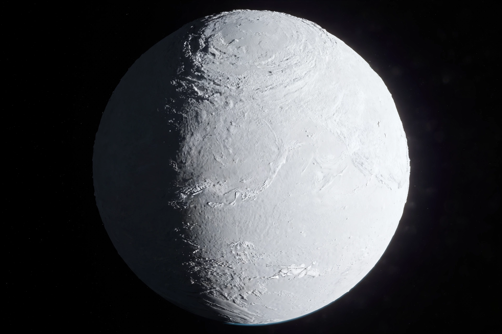

| Snowball Earth | |
|---|---|
| Events | Sturtian (~717–659 Ma), Marinoan (~650–635 Ma) glaciations |
| Era | Neoproterozoic (Cryogenian period) |
| Key evidence | Low-latitude glacial deposits, cap carbonates, banded iron formations |
| Proposed by | Joseph Kirschvink (term, 1992); developed by Paul Hoffman and others |
| Termination | Volcanic CO₂ build-up and greenhouse warming |

The Snowball Earth hypothesis proposes that during one or more of Earth's icehouse climates, the planet's surface became entirely or nearly entirely frozen, with ice sheets reaching sea level at the equator. The most severe events were the Sturtian and Marinoan glaciations of the Cryogenian period, roughly 717 to 635 million years ago. Proponents argue that glacial deposits found at palaeomagnetic latitudes near the equator, together with distinctive carbonate layers and the reappearance of banded iron formations, can only be explained by a globally frozen ocean.
Geologists had long puzzled over ancient glacial deposits — tillites — in places such as South Australia and Namibia whose magnetic signatures indicated deposition within about 10 degrees of the equator. In the 1960s W. Brian Harland suggested a great Neoproterozoic ice age; in 1992 Joseph Kirschvink coined the term "Snowball Earth" and proposed that the freeze ended when volcanic carbon dioxide, no longer removed by weathering of a frozen surface, accumulated over millions of years to produce an extreme greenhouse effect. Paul F. Hoffman and colleagues popularised the hypothesis in 1998.
Key lines of evidence include: glacial dropstones and tillites at low palaeolatitudes on nearly every continent; "cap carbonates" — thick layers of limestone and dolomite that abruptly overlie the glacial deposits, recording rapid post-glacial weathering in a hot, CO₂-rich atmosphere; a sharp negative carbon-isotope excursion; and banded iron formations, which returned after a billion-year absence, consistent with an ice-sealed ocean becoming anoxic and iron-rich. Iridium enrichment in some cap layers has also been reported.
The proposed trigger is a runaway ice–albedo feedback: once ice advanced past about 30° latitude, its reflectivity cooled the planet faster than the climate could stabilise, and the ice line raced to the equator. With the hydrological cycle nearly shut down, silicate weathering — Earth's main CO₂ sink — collapsed, while volcanoes kept emitting CO₂. After perhaps 5–30 million years, atmospheric CO₂ reached hundreds of times modern levels, forcing a catastrophic thaw, acid rain, and deposition of the cap carbonates. A milder variant, the "Slushball Earth", envisions a belt of open equatorial water that would have eased the survival of life.
Multicellular algae, sponges and other lineages evidently survived the glaciations, presumably in refugia such as cracks in sea ice, supraglacial melt ponds, hydrothermal systems or thin equatorial ice. Some researchers argue the environmental stress and nutrient pulse that followed deglaciation helped set the stage for the diversification of complex life in the Ediacaran period and ultimately the Cambrian explosion.
Critics note uncertainties in palaeomagnetic reconstructions, argue that some "equatorial" tillites may record high-altitude or reworked deposits, and question whether photosynthetic life could endure a fully sealed ocean for tens of millions of years. Alternative models invoke high obliquity or partially open "waterbelt" oceans. Nevertheless, the broad reality of near-global Cryogenian glaciation is now widely accepted, with debate focused on its severity and exact extent.